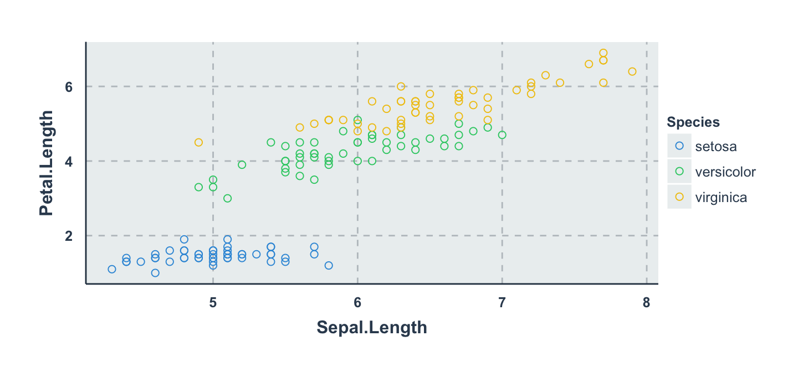

2017-06-17
課程教材作者群
課程教材作者群
名人堂：
Johnson Hsieh 
Wush Wu
Rafe C. H. Liu 
George 
Hsiao Ling
Speaker
Alger, Yang
課程綱要
Agenda
- Data Visualization
ggplot2in R- 基本架構介紹
- 起手式(基本語法)
- 應用(各種圖形的呈現)
BarLineHistogramPointHeatmap
- 進階技巧
- 互動式視覺化呈現
- Bonus

Data Visualization
- 清晰有效地傳達與溝通訊息
- 教學、研究、宣傳
- 美學、功能兼顧
- 統計圖形、訊息可視化
- 一張好圖，勝過千言萬語

ggplot2 簡介

The Anatomy of a Plot

ggplot2 基本架構
- 資料 (data) 和映射 (mapping)
- 幾何對象 (
geometric) - 座標尺度 (
scale) - 統計轉換 (
statistics) - 座標系統 (
coordinante) - 圖層 (layer)
- 刻面 (
facet) - 主題 (
theme)
ggplot2 基本架構(2)
 source: http://goo.gl/Odt2Rs
source: http://goo.gl/Odt2Rs
ggplot2 基本語法
ggplot(data=..., aes(x=..., y=...)) + geom_xxx(...) + stat_xxx(...) + facet_xxx(...) + ...
ggplot描述 data 從哪來aes描述圖上的元素跟 data 之類的對應關係geom_xxx描述要畫圖的類型及相關調整的參數- 常用的類型諸如：
geom_bar,geom_line,geom_points, …
圖層概念的實作
前菜 - ggplot2到底有多少種圖
Various functions
library(ggplot2)
# list all geom
ls(pattern = '^geom_', env = as.environment('package:ggplot2'))
[1] "geom_abline" "geom_area" "geom_bar" [4] "geom_bin2d" "geom_blank" "geom_boxplot" [7] "geom_col" "geom_contour" "geom_count" [10] "geom_crossbar" "geom_curve" "geom_density" [13] "geom_density_2d" "geom_density2d" "geom_dotplot" [16] "geom_errorbar" "geom_errorbarh" "geom_freqpoly" [19] "geom_hex" "geom_histogram" "geom_hline" [22] "geom_jitter" "geom_label" "geom_line" [25] "geom_linerange" "geom_map" "geom_path" [28] "geom_point" "geom_pointrange" "geom_polygon" [31] "geom_qq" "geom_quantile" "geom_raster" [34] "geom_rect" "geom_ribbon" "geom_rug" [37] "geom_segment" "geom_sf" "geom_smooth" [40] "geom_spoke" "geom_step" "geom_text" [43] "geom_tile" "geom_violin" "geom_vline"
注意
- 使用
data.frame儲存資料 (不可以丟 matrix 物件) - 使用
wide formattolong format

正片開始
首先請先安裝以下套件
- 安裝套件
install.packages(c("tidyr","dplyr","ggplot2"))
- 載入套件 (注意：下載完套件一定要記得
library才能使用喲！)
library(ggplot2) library(dplyr) library(tidyr)
or
- 安裝套件
install.packages("tidyverse")
- 載入套件 (注意：下載完套件一定要記得
library才能使用喲！)
library(tidyverse)
一切從讀檔開始（CSV）
############### 絕對路徑 ###############
# 請輸入完整的檔案路徑
data <- read.csv("/Volumes/SD-Lofu/PIXNET_DS_Workshop_EDA_Alger/data/transaction.csv") #如果你是mac
data <- read.csv("C:\\Users\\transaction.csv") #如果你是windows
############### 相對路徑 ###############
# 瞭解現在我們所處在的路徑
getwd()
# 設定我們檔案存放的路徑
setwd()
# 讀檔起手式
data <- read.csv("transaction.csv")
# 若讀入的是亂碼，試試以下
data <- read.csv("transaction.csv",fileEncoding = 'big5') #如果你是mac
data <- read.csv("transaction.csv",fileEncoding = 'utf-8') #如果你是windows
資料介紹
| area_park | trac_month | trac_year | area_build | area_land | use_type |
|---|---|---|---|---|---|
| 0.0 | 1 | 102 | 61 | 35.0 | 住 |
| 0.0 | 1 | 102 | 104 | 10.7 | 商 |
| 8.6 | 1 | 102 | 52 | 8.5 | 商 |
| 0.0 | 1 | 102 | 39 | 4.7 | 商 |
| 0.0 | 1 | 102 | 185 | 31.0 | 住 |
欄位說明
| 英文欄位名稱 | 中文欄位名稱 |
|---|---|
| city | 縣市 |
| district | 鄉鎮市區 |
| trac_year | 交易年份 |
| trac_month | 交易月份 |
| trac_type | 交易標的 |
| trac_content | 交易筆棟數 |
| use_type | 使用分區或編定 |
| 英文欄位名稱 | 中文欄位名稱 |
|---|---|
| build_type | 建物型態 |
| build_ymd | 建築完成年月 |
| area_land | 土地移轉總面積.平方公尺. |
| area_build | 建物移轉總面積.平方公尺. |
| area_park | 車位移轉總面積.平方公尺. |
| price_total | 總價.元. |
| price_unit | 單價.元.平方公尺. |
以為開始了嗎？
- 進行分析前，先去了解資料的型態與特性
str(data)
'data.frame': 153598 obs. of 15 variables: $ city : Factor w/ 4 levels "高雄市","臺北市",..: 2 2 2 2 2 2 2 2 2 2 ... $ district : Factor w/ 99 levels "阿蓮區","八里區",..: 63 96 96 5 96 5 5 38 38 42 ... $ trac_year : int 102 102 102 102 102 102 102 102 102 102 ... $ trac_month : Factor w/ 12 levels "1","2","3","4",..: 1 1 1 1 1 1 1 1 1 1 ... $ trac_type : Factor w/ 2 levels "房地(土地+建物)",..: 1 1 2 1 1 2 2 2 2 2 ... $ trac_content: Factor w/ 327 levels "土地0建物0車位0",..: 57 57 58 57 57 62 62 58 64 167 ... $ use_type : Factor w/ 5 levels "工","農","其他",..: 5 4 4 4 5 5 5 5 1 5 ... $ build_type : Factor w/ 12 levels "辦公商業大樓",..: 6 12 10 12 7 7 7 12 1 12 ... $ build_ymd : int 701109 701228 970114 851218 970624 1010724 1010724 1000414 1010531 870910 ... $ area_land : num 34.96 10.71 8.51 4.7 30.97 ... $ area_build : num 60.6 104.5 51.9 39.4 185.2 ... $ area_park : num 0 0 8.55 0 0 ... $ price_total : num 6380000 12010000 10080000 4600000 23800000 ... $ price_unit : int 105263 114928 194070 116900 128510 218147 204716 174613 133648 27658 ... $ age : int 32 32 5 17 5 1 1 2 1 15 ...
身為資料分析師，一定要有的好習慣！
- 暸解基本的各變數統計量值
summary(data)
city district trac_year trac_month
高雄市:34460 淡水區 : 7172 Min. :102 12 :15206
臺北市:24238 西屯區 : 5974 1st Qu.:102 5 :15079
臺中市:37482 新莊區 : 5955 Median :102 4 :14682
新北市:57418 北屯區 : 5881 Mean :102 3 :14523
新店區 : 5873 3rd Qu.:102 7 :13805
中和區 : 5719 Max. :102 6 :13392
(Other):117024 (Other):66911
trac_type trac_content use_type
房地(土地+建物) :91613 土地1建物1車位0:66792 工 : 3233
房地(土地+建物)+車位:61985 土地1建物1車位1:41031 農 : 577
土地2建物1車位0:14537 其他: 8206
土地1建物1車位2: 7195 商 : 26205
土地2建物1車位1: 4787 住 :115377
土地3建物1車位0: 4691
(Other) :14565
build_type build_ymd area_land
住宅大樓(11層含以上有電梯):70725 Min. : 100602 Min. : 0
公寓(5樓含以下無電梯) :23211 1st Qu.: 780326 1st Qu.: 13
透天厝 :21954 Median : 870506 Median : 22
華廈(10層含以下有電梯) :20365 Mean : 868754 Mean : 42
套房(1房1廳1衛) : 9709 3rd Qu.: 991201 3rd Qu.: 36
店面(店鋪) : 2888 Max. :1030313 Max. :127088
(Other) : 4746
area_build area_park price_total price_unit
Min. : 0 Min. : 0 Min. : 0 Min. : 0
1st Qu.: 85 1st Qu.: 0 1st Qu.: 4900000 1st Qu.: 42685
Median : 124 Median : 0 Median : 8400000 Median : 67880
Mean : 153 Mean : 25 Mean : 12879580 Mean : 86176
3rd Qu.: 179 3rd Qu.: 9 3rd Qu.: 14580000 3rd Qu.: 111173
Max. :79669 Max. :2400000 Max. :8800000000 Max. :4284119
NA's :461
age
Min. :-1
1st Qu.: 3
Median :15
Mean :15
3rd Qu.:24
Max. :92
質化 v.s. 量化：Bar Chart
geom_bar
- 先來
比較看看2013年在各縣市的案件交易量
thm <- function() theme(text=element_text(size = 15, family = "STHeiti")) # 控制字體與大小
# STHeiti是只有Mac才有的字體, 用來解決Mac系統中文顯示錯誤的問題
# Windows系統使用者請忽略 `+ thm()` 指令
data %>%
ggplot(aes(x=city)) + geom_bar(stat = "count") + thm() # stat = "count" 算個數

Change labels !
data %>% ggplot(aes(x=city)) + geom_bar(stat = "count") + thm() + labs(title="各縣市交易量",x="縣市",y="交易量") # lab用來幫圖形的標題、x軸與y軸做命名
Change colors !
- 顏色調整：
colorvsfill?
data %>% ggplot(aes(x=city)) + geom_bar(stat = "count") + thm() + labs(title="各縣市交易量",x="縣市",y="交易量") + geom_bar(fill='snow', color='black') # see colors() if you're picky
Bar chart
比較臺北市各行政區的案件交易量
# 資料整理 table = data %>% filter(city == "臺北市") %>% group_by(district) %>% summarise(Count=n()) # dplyr::n 用來計數 table
# A tibble: 12 x 2
district Count
<fctr> <int>
1 北投區 2416
2 大安區 1755
3 大同區 1092
4 南港區 989
5 內湖區 3598
6 士林區 1859
7 松山區 1556
8 萬華區 1584
9 文山區 2197
10 信義區 1585
11 中山區 4410
12 中正區 1197
Bar chart
table %>% ggplot(aes(x=district,y=Count)) + geom_bar(stat = "identity") + thm() # stat='identity'以表格的值做為bar的高度

Reoder x
table %>% ggplot(aes(x=reorder(district,-Count), y=Count)) + geom_bar(stat='identity') + thm() + labs(titles = "臺北市各行政區交易量", x = "行政區", y = "Count")
小挑戰
- 計算並
比較臺北市&高雄市的各使用分區或編定(use_type)所佔比例
Source: local data frame [10 x 4]
Groups: city [2]
# A tibble: 10 x 4
city use_type Count rate
<fctr> <fctr> <int> <dbl>
1 高雄市 工 196 0.01
2 高雄市 農 123 0.00
3 高雄市 其他 532 0.02
4 高雄市 商 7582 0.22
5 高雄市 住 26027 0.76
6 臺北市 工 442 0.02
7 臺北市 農 3 0.00
8 臺北市 其他 1709 0.07
9 臺北市 商 7323 0.30
10 臺北市 住 14761 0.61
參考解答
table = data %>% filter(city == "臺北市" | city == "高雄市" ) %>% group_by(city,use_type) %>% summarise(Count = n()) %>% mutate(rate = round(Count/sum(Count),2) )
Grouping：stack
table %>% ggplot(aes(x = city, y = Count, fill = use_type)) + geom_bar(stat = 'identity', position = 'stack') + thm() # stack類別堆疊

Grouping：dodge
table %>% ggplot(aes(x = city, y = rate, fill = use_type)) + geom_bar(stat = 'identity', position = 'dodge') + # dodge類別並排 thm() + scale_fill_discrete(name ="使用分區或編定") # 設定圖例的顯示
量化 v.s. 量化：Line Chart
geom_line
- 各月份交易量
table = data %>% group_by(trac_month) %>% summarise(Count=n()) table
# A tibble: 12 x 2
trac_month Count
<fctr> <int>
1 1 10367
2 2 7871
3 3 14523
4 4 14682
5 5 15079
6 6 13392
7 7 13805
8 8 11714
9 9 10814
10 10 13166
11 11 12979
12 12 15206
Line chart
table %>% ggplot(aes(x=trac_month,y=Count ,group = 1)) + geom_line() + thm() + labs(x = "交易月份" , y = "交易數量")

Multiple Line
- 各縣市各月份交易量比較
table = data %>% group_by(city,trac_month) %>% summarise(Count=n()) table
Source: local data frame [48 x 3]
Groups: city [?]
# A tibble: 48 x 3
city trac_month Count
<fctr> <fctr> <int>
1 高雄市 1 2511
2 高雄市 2 1897
3 高雄市 3 3355
4 高雄市 4 3524
5 高雄市 5 3378
6 高雄市 6 3097
7 高雄市 7 3063
8 高雄市 8 2573
9 高雄市 9 2354
10 高雄市 10 2590
# ... with 38 more rows
Multiple Line
table %>% ggplot(aes(x=trac_month,y=Count,group=city,color=city)) + geom_line() + geom_point() + thm() + labs(x = "交易月份" , y = "交易數量")

小挑戰
- 計算臺北市&高雄市不同屋齡的交易量，並畫出
MultipleLine plot - 如下圖：

參考答案 (有發現什麼問題嗎？！)
data %>% filter(city == "臺北市" | city == "高雄市" ) %>% group_by(city,age) %>% summarise(Count = n()) %>% ggplot(aes(x=age,y=Count,group=city,color=city)) + geom_line() + geom_point() + thm()

調整 x 軸的 scale 再看一次
- EDA的價值之一就是找出資料中的
不合理
data %>% filter(city == "臺北市" | city == "高雄市" ) %>% group_by(city,age) %>% summarise(Count = n()) %>% ggplot(aes(x=age,y=Count,group=city,color=city)) + geom_line() + geom_point() + thm() + coord_cartesian(xlim = c(-3, 10))

單一數值：Histogram
geom_histogram
data %>% ggplot(aes(x=age, y =..count..)) + geom_histogram()

Histogram
aes(y=..count..)vs.aes(y=..density..)
data %>% ggplot(aes(x=age, y =..density..)) + geom_histogram()

Histogram
data %>% ggplot(aes(x=age, y =..density.., fill =..count..)) + # fill 依指定欄位填色 geom_histogram(binwidth=.5)
Histogram + density
geom_histogram()+geom_density()
data %>% ggplot(aes(x=age,y=..density..)) + geom_histogram(color="black", fill="white") + geom_density(alpha=.2, fill="#FF6666") # alpha設定透明度

量化 v.s. 量化：Scatter Plot
Scatter plot
geom_point
iris %>% ggplot(aes(x=Sepal.Length, y=Petal.Length, color=Species)) + geom_point(shape=1, size=2) # shape控制圖示；size控制點的大小

point shape types in ggplot2

Scatter plot
- 參數放在 aes() 函數裡面，表示資料依據指定欄位內容做不同的shape/size變化
iris %>% ggplot(aes(x=Sepal.Length, y=Petal.Length, color=Species, shape = Species, size = Species)) + geom_point() + scale_shape_manual(values=c(1,5,7)) + # 控制 shape 顯示圖示 scale_size_manual(values=c(1,2,3)) # 控制圖示 size 顯示大小
插播
install.packages("devtools")

小挑戰
- 士林區,文山區,信義區三個區域的套房(1房1廳1衛)在屋齡與單位尺價存在著怎樣的特性？

參考答案
library(ggthemr)
ggthemr('flat')
ans = data %>%
filter(district == "文山區" | district == "士林區" |district == "信義區") %>%
filter(build_type == "套房(1房1廳1衛)") %>%
ggplot(aes(x=age, y=price_unit,color = district)) + geom_point(position = "jitter") +
thm()
ans

HeatMap
相關性熱圖
- 通常我們會好奇變數與變數之間是不是存在著相關性
- 在統計學上有一種簡單的方式去計算變數間的關係指標，我們稱之為相關係數係數！
- 以下將以 iris 資料做為示範，用熱圖來呈現
# 挑出前四欄位 dat <- iris %>% select(1:4) dat %>% head()
Sepal.Length Sepal.Width Petal.Length Petal.Width 1 5.1 3.5 1.4 0.2 2 4.9 3.0 1.4 0.2 3 4.7 3.2 1.3 0.2 4 4.6 3.1 1.5 0.2 5 5.0 3.6 1.4 0.2 6 5.4 3.9 1.7 0.4
寬轉長 計算相關性
p = dat %>% cor() %>% as.data.frame() %>% mutate(names = row.names(.)) %>% gather(class,cor,1:4) p %>% head(10)
names class cor 1 Sepal.Length Sepal.Length 1.00 2 Sepal.Width Sepal.Length -0.12 3 Petal.Length Sepal.Length 0.87 4 Petal.Width Sepal.Length 0.82 5 Sepal.Length Sepal.Width -0.12 6 Sepal.Width Sepal.Width 1.00 7 Petal.Length Sepal.Width -0.43 8 Petal.Width Sepal.Width -0.37 9 Sepal.Length Petal.Length 0.87 10 Sepal.Width Petal.Length -0.43
Heatmap的好處
- 藉由 Heatmap ，快速地看出變數之間的關聯程度
p %>% ggplot(aes(x=names, y=class, fill= cor)) + geom_tile() + labs(x = "", y = "") + scale_fill_gradient2(limits=c(-1, 1))

進階技巧
statistics
- Fit regression line
library(ggthemr)
ggthemr('flat')
iris %>%
ggplot(aes(x = Sepal.Length, y = Petal.Length)) +
geom_point() +
stat_smooth(method=lm, level=.95) # add se=FALSE to disable CI

facet
- 比較各縣市在各月份下的交易量
data %>%
group_by(city,trac_month) %>% # 選擇縣市、交易月份作為分群
summarise(total = n()) -> table # 計算分群下的總數
table %>%
ggplot(aes(x = trac_month, y = total ,fill = city))+
geom_bar(stat='identity') + thm()

facet
table %>%
ggplot(aes(x = trac_month, y = total ,fill = city))+
geom_bar(stat='identity') + thm() +
facet_wrap( ~city , nrow = 2) +
labs(x = "交易月份" ,y="交易量")
coord_flip()
table %>% ggplot(aes(x = trac_month, y = total ,fill = city)) + geom_bar(stat='identity') + thm() +facet_wrap( ~ city , nrow = 2)+ labs(x = "交易月份" ,y="交易量") + coord_flip()

圖形輸出
- 利用 RStudio UI 介面存擋
- 畫完圖之後，再存檔~~
ggsave('檔案名稱')
ggsave("plot.pdf", width = 4, height = 4)
ggsave("plot.png", width = 4, height = 4, dpi = 300)
互動式視覺化呈現
package：Plotly
- Plotly是一個資料視覺化的R套件，以簡單的方式，讓資料能夠產生互動的效果。
- 提供一個合作平台，使用者能夠將自己在R中繪製的圖存上屬於自己的Plotly平台上。
- Plotly官方網站
- 結合了各式各樣的API，包裝
Python、R、Malab、…等等
- 當然～ggplot2也能夠輕易地使用plotly轉換成互動式的圖表！！
套件安裝
- 直接從
CRAN內下載
# Plotly is now on CRAN!
install.packages("plotly")
# install the latest development version (on GitHub) via devtools
或是從github上下載，但前提是先安裝devtools
# install.packages("devtools")
devtools::install_github("ropensci/plotly")
- 安裝完，一樣別忘了要
library！
library(plotly)
plot with ggplot2
- 剛剛的小挑戰！？
ans = data %>% filter(district == "文山區" | district == "士林區" |district == "信義區") %>% filter(build_type == "套房(1房1廳1衛)") %>% ggplot(aes(x=age, y=price_unit,color = district)) + geom_point(position = "jitter") + thm() ans
plot with ggplotly & Resize
- 是不是非常簡單？！
ggplotly(ans,height = 400,width = 1000)
學習資源
掌握心法後，如何自行利用 R 解決問題
了解自己的需求，詢問關鍵字與函數
歡迎來信 qazwsx36541472@gmail.com 與我一起交流！
本週作業
請同學完成R語言翻轉系統以下章節：
必修
03-RVisualization-03-ggplot2
選修
03-RVisualization-01-One-Variable-Visualization03-RVisualization-02-Multiple-Variables-Visualization03-RVisualization-04-Javascript-And-Maps
Thanks for listening